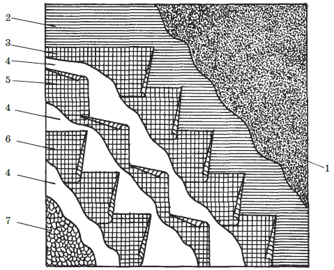
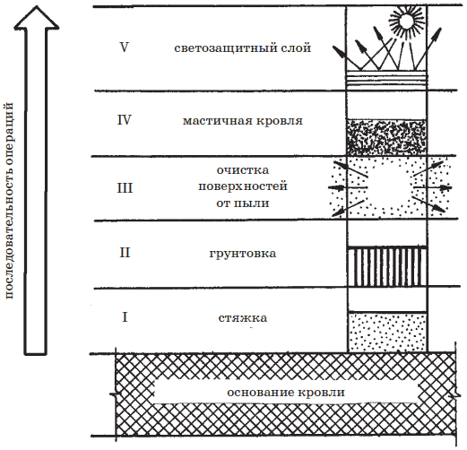
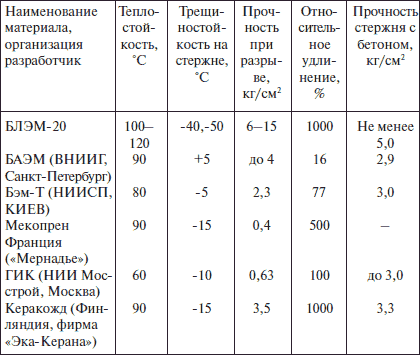
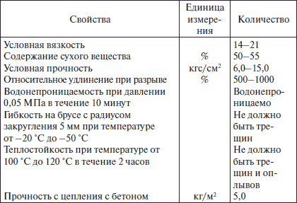

Мастичная кровля.

Мягкая кровля может быть выполнена и без рулонных материалов, а лишь с использованием мастики как самостоятельного кровельного материала. Мастичная кровля значительно дешевле рулонных, так как работы по ее устройству более механизированы, что дает возможность снизить затраты труда в 5-10 раз.
На заметку
Мастичная кровля имеет один существенный плюс: на ней нет швов, но есть и один существенный минус: при производстве работ необходимо обеспечить примерно одинаковую толщину мастичного покрытия на всей поверхности, за исключением разжелобков, примыканий, конька и ребер, о чем будет идти речь дальше.
По конструкциям мастичные кровли классифицируются на неармированные, армированные и комбинированные. Мастичные кровли, как и рулонные, состоят из нескольких слоев, первый из которых наносится способом распыления горячей мастики на подготовленное основание, образуя на нем водонепроницаемую пленку.
Неармированные мастичные кровли представляют собой литой гидроизоляционный ковер, образованный способом напыления слоя битумно-латексной эмульсии ЭГИК и защитного слоя горячей мастики толщиной 10 мм, в которую втапливают мелкий гравий или минеральную крошку.
Армированные мастичные кровли представляют собой литой гидроизоляционный ковер, состоящий из трех или четырех слоев битумной или битумно-полимерной эмульсии, армированных стеклохолстом, стекловолокном или стеклосеткой и стекловойлоком.
• Стеклосетка – это тканная сетка из очень прочных стеклонитей с размером ячеек 4x4 мм;
• Стекловойлок – это полотнище из произвольно расположенных стекловолокон. Оба материала характеризуются большой механической прочностью, поэтому их принято использовать в качестве армирующих прокладок.
Комбинированные мастичные кровли состоят из мастичных нижних слоев с наклеенными на них слоями рулонных материалов по горячим мастикам. Они позволяют применять для нижних слоев менее дефицитные мастики.
Поверх армированных и неармированных мастичных покрытий наносят защитный слой краски или мастики с мелким гравием ( рис. 32).

Рис. 32. Раскладка полотнищ стеклохолста при устройстве мастичных кровель: 1 – основание; 2 – грунтованное основание; 3, 5, 6 – первый, второй и третий слои стеклохолста; 4 – мастика; 7 – защитный слой из гравия
Конструкции мастичных кровель в зависимости от уклона скатов могут быть трех типов.
Плоская кровля с уклоном 0–2,5 %. Ее выполняют из четырех слоев мастичного гидроизоляционного ковра с четырьмя армирующими прокладками и верхним защитным гравийным слоем.
Кровля с уклоном от 2,5 до 10 % выполняется из трех слоев мастичного ковра (из битумной или битумно-полимерной мастики), двух слоев армирующих прокладок и верхнего защитного гравийного слоя.
Кровля при уклоне 10–15 % выполняется с двумя слоями мастичного ковра, двумя слоями армирующих прокладок и защитного гравийного слоя.
Кровля при уклоне 15–25 % выполняется с тремя слоями мастичного ковра, двумя армирующими слоями и верхним слоем краски.
Конек крыши, ендовы и разжелобки, карнизный свес, а также места примыкания усиливают дополнительными слоями:
• конек крыши – мастичным слоем шириной 50–60 см, армированным стекловойлоком или стеклосеткой;
• карнизные свесы, ендовы и разжелобки двумя мастичными слоями, армированными прокладками.
Эти элементы усиливаются до устройства основного ковра. Места же примыкания кровли к стенам и вертикальным выступающим деталям укрепляют двумя мастичными слоями, армированными стекловойлоком или стеклотканью, после устройства основного гидроизоляционного ковра. Сверху делается защитный гравийный слой, втопленный в мастику.
Толщина армированных мест должна составлять 6–8 мм.
Совет
Для увеличения отражательной способности поверхности мастичной кровли ее после затвердевания гидроизоляционного слоя, но не ранее, чем через 24 часа, покрывают алюминиевой суспензией.
Работу по устройству мастичных кровель начинают с ендов, разжелобков, пониженных мест, где расположены водоприемные воронки. Ковер на битумных мастиках выполняют в следующей последовательности: по основанию настилают армирующие полотнища (стеклосетка или др.), сверху наносят сплошной слой горячей мастики и армирующий слой полностью пропитывается и приклеивается к основанию. Так же приклеиваются и остальные 2 или 3 армирующих слоя. Затем сверху наносят (втапливают) защитный гравийный слой.
Конец крыши независимо от уклона усиливают дополнительным мастичным слоем шириной 500600 мм с армированием.
Карниз крыши со свободным сбросом воды закрывают фартуком из оцинкованной стали.
Последовательность устройства мастичных кровель приводится на рис. 33.

Рис. 33. Последовательность устройства мастичной кровли
Битумно-полимерные эмульсионные мастикиКроме мастик, о которых мы говорили выше, традиционно применяющихся в России, в последние годы разработаны и начинают внедряться на рынки строительных материалов новые кровельные и гидроизоляционные мастики, разработанные в России, Франции, Финляндии ведущими в этой области фирмами. Это такие битумно-полимерные мастики, как: БЛЭМ-20 (Россия г. Москва), БАЭМ (Россия г. Санкт-Петербург), БЭМ-Т (Украина г. Киев), ГИК (Россия г. Москва), Мекопрен (Франция), Керакожд (Финляндия).
Характеристики эксплуатационных свойств этих мастик приведены в табл. 9.
Из таблицы видно, что мастика БЛЭМ-20 удовлетворяет самым высоким требованиям лучших мировых стандартов по данному классу материалов.
Таблица 9. Эксплуатационные свойства битумно-полимерных эмульсионных мастик
Монолитное, водостойкое, атмосферостойкое резиноподобное битумно-полимерное покрытие, полученное механизированным нанесением мастики на кровлю, по сравнению с традиционными кровельными битуминозными материалами имеет следующие преимущества:
• обеспечивает создание новых технологических решений устройства кровель и гидроизоляции любых форм в строительстве;
• сохраняет прочностные и эластические свойства в диапазоне температур от -45 до 120 °C;
• обладает высокой адгезией к любым видам оснований (бетону, металлу, дереву, кирпичу и др.);
• возможно нанесение на влажное основание;
• пожаровзрывобезопасно;
• обеспечивает удельную экономию сырьевых и энергетических затрат. Опыт применения мастики в новом строительстве, при ремонте кровель и устройстве гидроизоляции подтвердил эффективность и надежность эксплуатации покрытия на его основе. Так, например, отмечено, что стоимость устройства одного квадратного метра кровли с применением эмульсионной мастики на 20 % превышает затраты на выполнение покрытий из 4-х слоев рубероида, но гарантируется долговечность и надежность эксплуатации покрытий не менее 20 лет.
При этом уровень механизации кровельных работ составляет 90 % против 30 % при выполнении работ с использованием рубероида. В 2–3 раза сокращаются трудозатраты на монтажные работы и снижается материалоемкость покрытия. Более чем в три раза увеличивается межремонтный срок кровли и выполнения гидроизоляции.
Наряду с высокими технологическими и эксплуатационными характеристиками к преимуществам указанной мастики следует отнести и такие факторы: мастика не содержит летучих органических растворителей, неогнеопасна, не представляет опасности для окружающей среды, применяется в холодном состоянии, обеспечивает получение бесшовных покрытий.
Опыт эксплуатации покрытий этой мастикой подтверждает, что область ее применения практически безгранична, она может быть использована для:
• устройства кровельного и гидроизоляционного покрытия по сборным железобетонным конструкциям в заводских условиях;
• устройства кровельного покрытия в построечных условиях без подслоя или по одному слою подкладочного материала (пергамин, рубероид, стекло-основа), уложенного по цементно-песчаной стяжке или сборным железобетонным конструкциям;
• ремонта кровель и гидроизоляции;
• противокоррозионной защиты оборудования и сооружений;
• изоляции подвалов, балконов, санузлов и других объектов строительства.
Расход мастики при устройстве кровель в новом строительстве составляет 6 кг/м , при ремонте и гидроизоляции – 4 кг/м .
По своим физико-механическим и эксплуатационным свойствам покрытия из мастики удовлетворяют основные нормативные требования, изложенные в табл. 10.
Таблица 10. Нормативные требования, предъявляемые к мастике